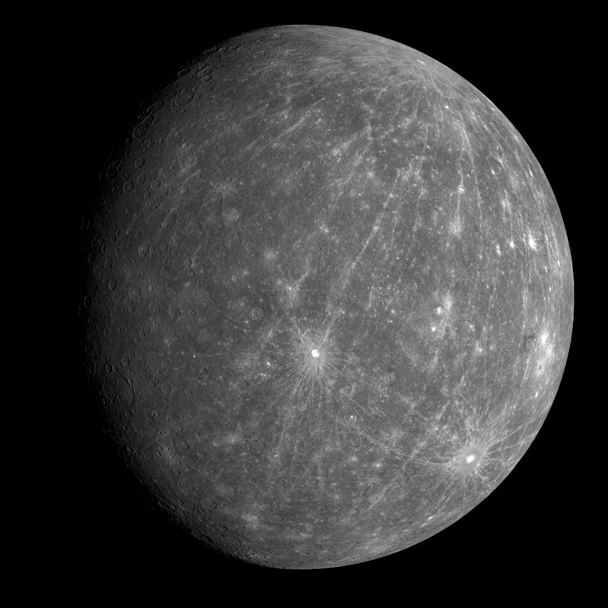

The Swift Planet
Mercury is the smallest and innermost planet in the Solar System. Its orbital period around the Sun of 87.97 days is the shortest of all the planets in the Solar System.
Basic Facts
- Type: Terrestrial Planet
- Distance from Sun: 57.9 million km
- Diameter: 4,879 km (0.38 × Earth)
- Mass: 3.285 × 10²³ kg (0.055 × Earth)
- Surface Temperature: -180°C to 430°C
- Orbital Period: 87.97 Earth days
Surface Features
- Caloris Basin: Largest impact crater (1,550 km)
- Scarps: Long cliffs formed by cooling
- Volcanic Plains: Smooth areas from lava flows
- Impact Craters: Heavily cratered surface
- Hollows: Bright, shallow depressions
- Ridges: Wrinkle-like surface features
Atmosphere & Environment
- Atmosphere: Extremely thin (exosphere)
- Composition: Oxygen, sodium, hydrogen
- Surface Pressure: Near zero
- Solar Radiation: Intense due to proximity
- Magnetic Field: Weak but present
- Surface Gravity: 0.38 × Earth's
Composition
- Core: Large iron-nickel core (85% of radius)
- Mantle: Silicate rock layer
- Crust: Thin silicate crust
- Surface: Silicate minerals and metals
- Density: 5.43 g/cm³ (second highest)
- Internal Structure: Differentiated
Exploration History
- Mariner 10: First flyby (1974-1975)
- MESSENGER: Orbital mission (2011-2015)
- BepiColombo: Current mission (2018-)
- Surface Coverage: 100% mapped
- Key Discoveries: Water ice in craters
- Future Missions: Sample return planned
Unique Characteristics
- Orbital Eccentricity: Highest of all planets
- Solar Day: 176 Earth days
- Temperature Range: Largest in solar system
- Core Size: Largest relative to planet size
- Surface Age: 4.5 billion years old
- No Moons: Only planet without satellites
Fun Facts
🌡️ Extreme Temperatures
Mercury has the largest temperature range of any planet, from -180°C to 430°C.
⚡ Fastest Orbit
Mercury orbits the Sun faster than any other planet at 47.4 km/s.
💎 Iron Core
Mercury's iron core makes up 85% of its radius, the largest core-to-planet ratio.
🌊 Water Ice
Despite being closest to the Sun, Mercury has water ice in permanently shadowed craters.